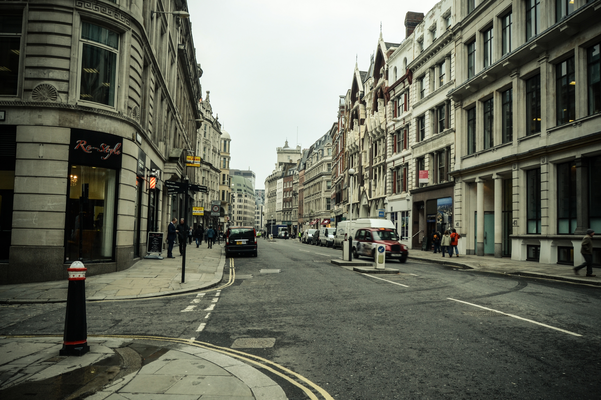

О Лондоне
Лондон — столица Великобритании и один из величайших городов истории и современности. В Вестминстере работает правительство, здесь же расположены Букингемский дворец, самые лучшие национальные галереи, музеи, театры и клубы. Лондон бесконечно меняется: из римской, а затем раннесредневековой крепости он превратился в крупный город. После Великого лондонского пожара 1666 года он в буквальном смысле слова восстал из пепла, удивляя всех зданиями в стиле барокко. В георгианскую эпоху в нем воплотилась мечта об элегантности, в годы правления королевы Виктории он стал олицетворением Британской империи. В наши дни это крупный финансовый центр.
Достопримечательности
Букингемский дворец
Букингемский дворец, имеющий статус главной резиденции королевы Елизаветы II, не является личной собственностью монарха, а принадлежит Британскому государству.
Часовая башня Биг-Бен (Большой Бен)
Биг-Бен – 150-летняя часовая башня – один из наиболее популярных туристических объектов Лондона. На самом деле, название «Биг-Бен» относится не к часовой башне, а к колоколу, находящемуся внутри нее и весящему 13 тонн.